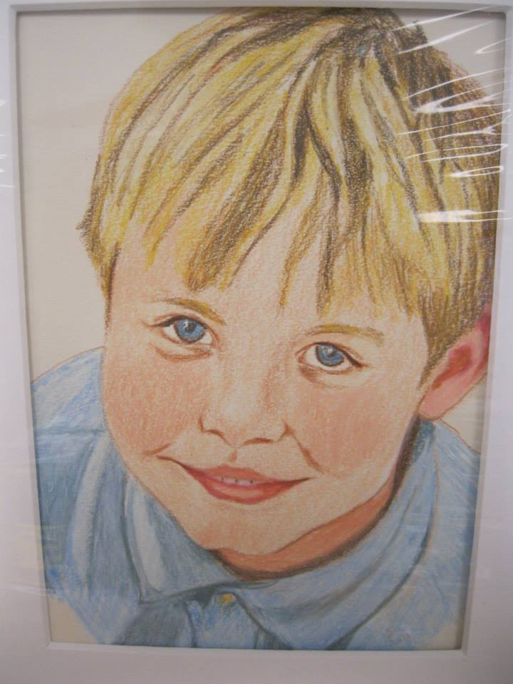

Sara Dozier White is an artist who works out of Northern Virginia. She has a Bachelor's Degree in Art from James Madison University.
Sara has been making portraits for 30 years. She has been using colored pencil to make her portraits for the last few years. Her methods aim to capture the personality of the people she draws.
